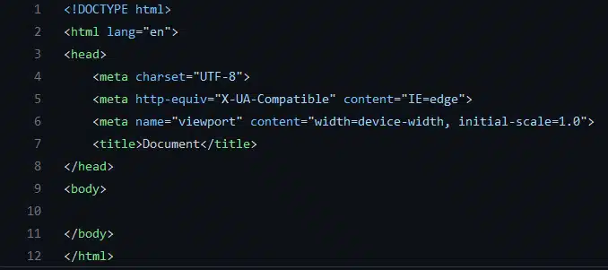

A evolução dos computadores acompanhou a evolução da sociedade durante os séculos XX e XXI. Entretanto, a história do computador não teve início apenas na modernidade. Lembre-se que os computadores são aparelhos eletrônicos que recebem, armazenam e produzem informações de maneira automática. Eles fazem parte do nosso cotidiano, sendo cada vez maior o número de computadores usados no mundo.
Primeira Geração (1951-1959)
Os computadores de primeira geração funcionavam por meio de circuitos e válvulas eletrônicas. Possuíam o uso restrito, além de serem imensos e consumirem muita energia.
Um exemplo é o ENIAC (Eletronic Numerical Integrator and Computer) que consumia cerca de 200 quilowatts e possuía 19.000 válvulas.
Segunda Geração (1959-1965)
Ainda com dimensões muito grandes, os computadores da segunda geração funcionavam por meio de transistores, os quais substituíram as válvulas que eram maiores e mais lentas. Nesse período já começam a se espalhar o uso comercial.
Terceira Geração (1965-1975) Os computadores da terceira geração funcionavam por circuitos integrados. Esses substituíram os transistores e já apresentavam uma dimensão menor e maior capacidade de processamento. Foi nesse período que os chips foram criados e a utilização de computadores pessoais começou.
Quarta Geração (1975-até os dias atuais) Com o desenvolvimento da tecnologia da informação, os computadores diminuem de tamanho, aumentam a velocidade e capacidade de processamento de dados. São incluídos os microprocessadores com gasto cada vez menor de energia. Nesse período, mais precisamente a partir da década de 90, há uma grande expansão dos computadores pessoais. Além disso, surgem os softwares integrados e a partir da virada do milênio, começam a surgir os computadores de mão. Ou seja, os smartphones, iPod, iPad e tablets, que incluem conexão móvel com navegação na web.
(Voltar)"Cliente" é um termo empregado em computação e representa uma entidade que consome os serviços de uma outra entidade servidora, em geral através do uso de uma rede de computadores numa arquitetura cliente-servidor.
No desenvolvimento da web, "lado do cliente" refere-se a tudo em um aplicativo web que é exibido ou ocorre no cliente (dispositivo do usuário final). Isso inclui o que o usuário vê, como texto, imagens e o resto da IU, junto com quaisquer ações que um aplicativo execute no navegador do usuário.
Linguagens de marcação como HTML e CSS são interpretadas pelo navegador no lado do cliente. Além disso, muitos desenvolvedores contemporâneos estão incluindo processos do lado do cliente em sua arquitetura de aplicativos e deixando de fazer tudo no lado do servidor; a lógica de negócios para páginas web dinâmicas, por exemplo, geralmente é executada no lado do cliente em um aplicativo web moderno. Os processos do lado do cliente quase sempre são escritos em JavaScript.
Os servidores processam e executam solicitações feitas por usuário através de softwares, bancos de dados, envio e recebimento de informações como e-mails, envio de formulários, hospedagem de websites e outros. Um servidor funciona, grosso modo, como um grande computador, mas ao invés de executar operações em nível doméstico, ele o faz em grande escala, transferindo esses resultados para diferentes computadores.
Para que serve um servidor? Um servidor serve para centralizar grandes operações virtuais em um único "computador", trazendo mais desempenho para a execução de determinadas tarefas. Quando uma empresa precisa, por exemplo, de uma ferramenta específica para executar uma tarefa, um servidor torna desnecessária a instalação desta ferramentas em cada uma das máquinas que precisarão utilizá-la: basta tê-la instalada em um servidor a que todos estes computadores estejam conectados. Um servidor é um computador equipado com um ou mais processadores, bancos de memória, portas de comunicação, softwares e, ocasionalmente, algum sistema para armazenamento de dados, como hard disks internos ou memórias SSD.
(Voltar)Um documento HTML válido precisa seguir obrigatoriamente a estrutura composta pelas tags html, head e body e a instrução DOCTYPE!. Esta estrutura está informada em uma documentação que descreve todos os detalhes do HTML, no caso as tags e atributos, e como os navegadores devem considerar e interpretar estas tags, esta documentação é chamada de "especificação do HTML", e através do que está declarado nela que é possível entender se um documento HTML válido.

(Voltar)Lista é um importante recurso de HTML, pois permite criarmos tópicos de textos para uma melhor exemplificação de um determinado assunto. São recursos extremamente usados, inclusive quando nem imaginamos que ele esta sendo usado, como no caso de menus. Hoje, boa parte dos menus em HTML é feito com listas.
Há dois tipos de listas:
As listas não numeradas são usadas para listar itens, sem se preocupar com sua sequência. Chamamos de lista de marcadores apenas. As tags usadas para criar uma lista não ordenada são ul e li. A tag ul é usada para definir a lista e a tag li é usada para cada item da lista.
Exemplo:
As listas ordenadas ou numeradas são usadas para indicar alguma sequência ou numeração As tags usadas para criar uma lista ordenada são ol e li. A tag ol é usada para definir a lista e a tag li é usada para cada item da lista.
Exemplos: